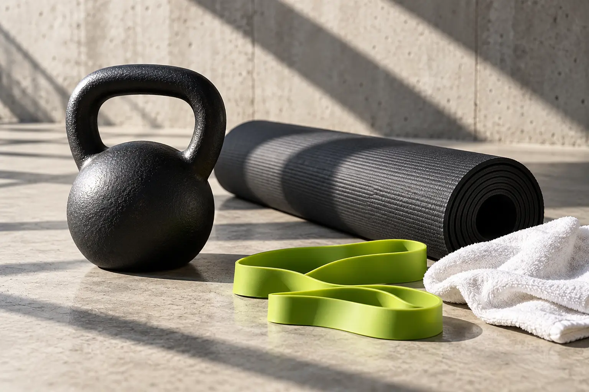

Camina
Haz espacio para una caminata que se adapte a tu día.
Una idea para empezar
Elige un trayecto conocido, lleva calzado cómodo y ajusta la distancia a tus posibilidades.
Caminar, hacer movilidad o tomar una pausa activa: el movimiento puede formar parte de tu día, sin complicarlo.
Activa tu temporizador
Elige una actividad que puedas integrar en tu rutina.
Encuentra momentos que se adapten a tu día.
Ajusta el ritmo a tus capacidades y comodidad.
Elige una actividad y el tiempo que quieres dedicarle. El temporizador puede pausarse y continuar sin perder tu avance.
Estas opciones organizan tu tiempo; no son una rutina médica personalizada. Detente si sientes dolor o malestar.
Busca un recorrido seguro y camina a un ritmo cómodo.
No todo movimiento tiene que ser un entrenamiento. Tu rutina también ofrece oportunidades.
Haz espacio para una caminata que se adapte a tu día.
Elige un trayecto conocido, lleva calzado cómodo y ajusta la distancia a tus posibilidades.
Interrumpe los periodos largos de estar sentado.
Cuando puedas, levántate un momento o cambia de postura de forma cómoda.
Es más fácil volver a una actividad que te gusta.
Prueba bailar, caminar acompañado o realizar una actividad recreativa a tu ritmo.